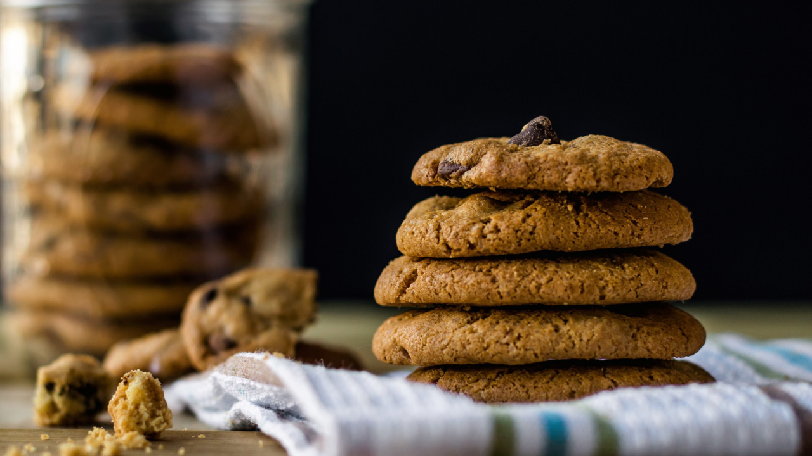

← Back to Recipe Book
Cookies
Pecan, raisin and cinnamon cookies

Prep Time
30 mins
Yield
5 ½ dozen
Ingredients
- 1 cup butter or margarine, softened
- 1 1/2 cups firmly packed brown sugar
- 3 eggs
- 3 tablespoons strong coffee
- 2 1/2 cups all-purpose flour
- 1 teaspoon baking soda
- 1 tablespoon ground cinnamon
- 1 tablespoon ground allspice
- 1 cup raisins
- 1 cup chopped pecans
Steps
-
Cream butter in a large mixing bowl;
gradually add sugar, beating until
light and fluffy. Add eggs, one at a
time, beating well after each addition.
Add coffee, stirring well.
-
Combine flour, soda, cinnamon, and
allspice in a large mixing bowl.
Stir in raisins and pecans to coat
well; add to creamed mixture.
-
Drop dough by heaping teaspoonfuls
2 inches apart onto greased cookie
sheets. Bake at 350° for 8 minutes.
Remove from cookie sheets, and cool
on wire racks.